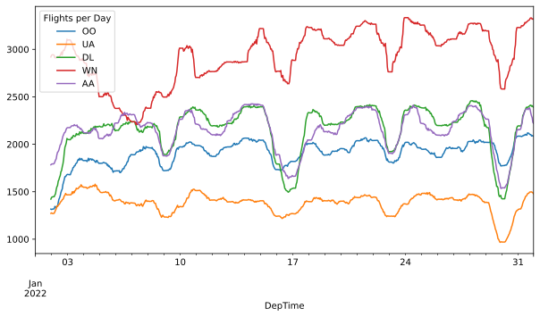
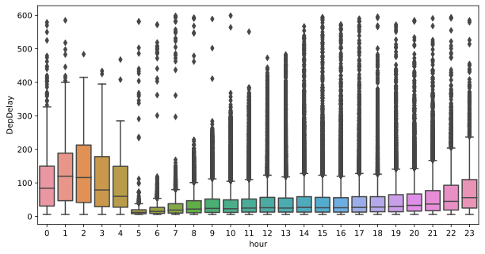
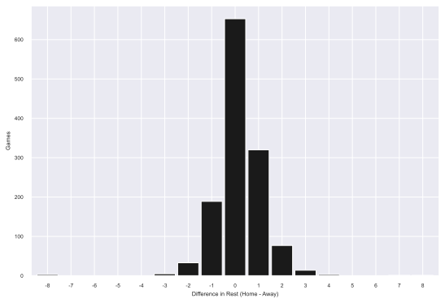

from pathlib import Path
from zipfile import ZipFile
import requests
data_dir = Path("../data") # replace this with a directory of your choice
dest = data_dir / "flights.csv.zip"
if not dest.exists():
r = requests.get(
"https://transtats.bts.gov/PREZIP/On_Time_Reporting_Carrier_On_Time_Performance_1987_present_2022_1.zip",
verify=False,
stream=True,
)
data_dir.mkdir(exist_ok=True)
with dest.open("wb") as f:
for chunk in r.iter_content(chunk_size=102400):
if chunk:
f.write(chunk)
with ZipFile(dest) as zf:
zf.extract(zf.filelist[0].filename, path=data_dir)
extracted = data_dir / "On_Time_Reporting_Carrier_On_Time_Performance_(1987_present)_2022_1.csv"Not so big data
Моделі та методи обробки великих даних
Ігор Мірошниченко
КНУ імені Тараса Шевченка, ФІТ
Polars vs. Pandas
Benchmarking
Дані
Спочатку ми отримаємо деякі дані про затримку рейсів.
Дані з Google Drive
pl.Config.set_tbl_rows(5)
start = time.time()
with open(response, 'rb') as f:
df_pl = pl.read_csv(f, truncate_ragged_lines=True)
end = time.time()
print(f"Time taken: {end - start:.2f} seconds")
df_plTime taken: 0.17 seconds
shape: (537_902, 110)
| Year | Quarter | Month | DayofMonth | DayOfWeek | FlightDate | Reporting_Airline | DOT_ID_Reporting_Airline | IATA_CODE_Reporting_Airline | Tail_Number | Flight_Number_Reporting_Airline | OriginAirportID | OriginAirportSeqID | OriginCityMarketID | Origin | OriginCityName | OriginState | OriginStateFips | OriginStateName | OriginWac | DestAirportID | DestAirportSeqID | DestCityMarketID | Dest | DestCityName | DestState | DestStateFips | DestStateName | DestWac | CRSDepTime | DepTime | DepDelay | DepDelayMinutes | DepDel15 | DepartureDelayGroups | DepTimeBlk | TaxiOut | … | Div1TotalGTime | Div1LongestGTime | Div1WheelsOff | Div1TailNum | Div2Airport | Div2AirportID | Div2AirportSeqID | Div2WheelsOn | Div2TotalGTime | Div2LongestGTime | Div2WheelsOff | Div2TailNum | Div3Airport | Div3AirportID | Div3AirportSeqID | Div3WheelsOn | Div3TotalGTime | Div3LongestGTime | Div3WheelsOff | Div3TailNum | Div4Airport | Div4AirportID | Div4AirportSeqID | Div4WheelsOn | Div4TotalGTime | Div4LongestGTime | Div4WheelsOff | Div4TailNum | Div5Airport | Div5AirportID | Div5AirportSeqID | Div5WheelsOn | Div5TotalGTime | Div5LongestGTime | Div5WheelsOff | Div5TailNum | |
|---|---|---|---|---|---|---|---|---|---|---|---|---|---|---|---|---|---|---|---|---|---|---|---|---|---|---|---|---|---|---|---|---|---|---|---|---|---|---|---|---|---|---|---|---|---|---|---|---|---|---|---|---|---|---|---|---|---|---|---|---|---|---|---|---|---|---|---|---|---|---|---|---|---|---|
| i64 | i64 | i64 | i64 | i64 | str | str | i64 | str | str | i64 | i64 | i64 | i64 | str | str | str | i64 | str | i64 | i64 | i64 | i64 | str | str | str | i64 | str | i64 | i64 | str | f64 | f64 | f64 | i64 | str | f64 | … | str | str | str | str | str | str | str | str | str | str | str | str | str | str | str | str | str | str | str | str | str | str | str | str | str | str | str | str | str | str | str | str | str | str | str | str | str |
| 2022 | 1 | 1 | 14 | 5 | "2022-01-14" | "YX" | 20452 | "YX" | "N119HQ" | 4879 | 11066 | 1106606 | 31066 | "CMH" | "Columbus, OH" | "OH" | 39 | "Ohio" | 44 | 11278 | 1127805 | 30852 | "DCA" | "Washington, DC" | "VA" | 51 | "Virginia" | 38 | 1224 | "1221" | -3.0 | 0.0 | 0.0 | -1 | "1200-1259" | 28.0 | … | null | null | "" | "" | "" | null | null | "" | null | null | "" | "" | "" | null | null | "" | null | null | "" | "" | "" | null | null | "" | null | null | "" | "" | "" | null | null | "" | null | null | "" | "" | null |
| 2022 | 1 | 1 | 15 | 6 | "2022-01-15" | "YX" | 20452 | "YX" | "N122HQ" | 4879 | 11066 | 1106606 | 31066 | "CMH" | "Columbus, OH" | "OH" | 39 | "Ohio" | 44 | 11278 | 1127805 | 30852 | "DCA" | "Washington, DC" | "VA" | 51 | "Virginia" | 38 | 1224 | "1214" | -10.0 | 0.0 | 0.0 | -1 | "1200-1259" | 19.0 | … | null | null | "" | "" | "" | null | null | "" | null | null | "" | "" | "" | null | null | "" | null | null | "" | "" | "" | null | null | "" | null | null | "" | "" | "" | null | null | "" | null | null | "" | "" | null |
| 2022 | 1 | 1 | 16 | 7 | "2022-01-16" | "YX" | 20452 | "YX" | "N412YX" | 4879 | 11066 | 1106606 | 31066 | "CMH" | "Columbus, OH" | "OH" | 39 | "Ohio" | 44 | 11278 | 1127805 | 30852 | "DCA" | "Washington, DC" | "VA" | 51 | "Virginia" | 38 | 1224 | "1218" | -6.0 | 0.0 | 0.0 | -1 | "1200-1259" | 16.0 | … | null | null | "" | "" | "" | null | null | "" | null | null | "" | "" | "" | null | null | "" | null | null | "" | "" | "" | null | null | "" | null | null | "" | "" | "" | null | null | "" | null | null | "" | "" | null |
| … | … | … | … | … | … | … | … | … | … | … | … | … | … | … | … | … | … | … | … | … | … | … | … | … | … | … | … | … | … | … | … | … | … | … | … | … | … | … | … | … | … | … | … | … | … | … | … | … | … | … | … | … | … | … | … | … | … | … | … | … | … | … | … | … | … | … | … | … | … | … | … | … | … | … |
| 2022 | 1 | 1 | 6 | 4 | "2022-01-06" | "DL" | 19790 | "DL" | "N989AT" | 1579 | 11057 | 1105703 | 31057 | "CLT" | "Charlotte, NC" | "NC" | 37 | "North Carolina" | 36 | 10397 | 1039707 | 30397 | "ATL" | "Atlanta, GA" | "GA" | 13 | "Georgia" | 34 | 1258 | "1257" | -1.0 | 0.0 | 0.0 | -1 | "1200-1259" | 15.0 | … | null | null | "" | "" | "" | null | null | "" | null | null | "" | "" | "" | null | null | "" | null | null | "" | "" | "" | null | null | "" | null | null | "" | "" | "" | null | null | "" | null | null | "" | "" | null |
| 2022 | 1 | 1 | 6 | 4 | "2022-01-06" | "DL" | 19790 | "DL" | "N815DN" | 1580 | 14869 | 1486903 | 34614 | "SLC" | "Salt Lake City, UT" | "UT" | 49 | "Utah" | 87 | 14057 | 1405702 | 34057 | "PDX" | "Portland, OR" | "OR" | 41 | "Oregon" | 92 | 2240 | "2231" | -9.0 | 0.0 | 0.0 | -1 | "2200-2259" | 10.0 | … | null | null | "" | "" | "" | null | null | "" | null | null | "" | "" | "" | null | null | "" | null | null | "" | "" | "" | null | null | "" | null | null | "" | "" | "" | null | null | "" | null | null | "" | "" | null |
pd.options.display.max_rows = 5
start = time.time()
with open(response, 'rb') as f:
df_pd = pd.read_csv(f, on_bad_lines='skip')
end = time.time()
print(f"Time taken: {end - start:.2f} seconds")
df_pdTime taken: 1.93 seconds| Year | Quarter | Month | DayofMonth | DayOfWeek | FlightDate | Reporting_Airline | DOT_ID_Reporting_Airline | IATA_CODE_Reporting_Airline | Tail_Number | ... | Div4TailNum | Div5Airport | Div5AirportID | Div5AirportSeqID | Div5WheelsOn | Div5TotalGTime | Div5LongestGTime | Div5WheelsOff | Div5TailNum | Unnamed: 109 | |
|---|---|---|---|---|---|---|---|---|---|---|---|---|---|---|---|---|---|---|---|---|---|
| 0 | 2022 | 1 | 1 | 14 | 5 | 2022-01-14 | YX | 20452 | YX | N119HQ | ... | NaN | NaN | NaN | NaN | NaN | NaN | NaN | NaN | NaN | NaN |
| 1 | 2022 | 1 | 1 | 15 | 6 | 2022-01-15 | YX | 20452 | YX | N122HQ | ... | NaN | NaN | NaN | NaN | NaN | NaN | NaN | NaN | NaN | NaN |
| ... | ... | ... | ... | ... | ... | ... | ... | ... | ... | ... | ... | ... | ... | ... | ... | ... | ... | ... | ... | ... | ... |
| 537900 | 2022 | 1 | 1 | 6 | 4 | 2022-01-06 | DL | 19790 | DL | N989AT | ... | NaN | NaN | NaN | NaN | NaN | NaN | NaN | NaN | NaN | NaN |
| 537901 | 2022 | 1 | 1 | 6 | 4 | 2022-01-06 | DL | 19790 | DL | N815DN | ... | NaN | NaN | NaN | NaN | NaN | NaN | NaN | NaN | NaN | NaN |
537902 rows × 110 columns
Рядки за номером, стовпці за назвою
Using head and tail:
19.7 µs ± 686 ns per loop (mean ± std. dev. of 7 runs, 10,000 loops each)Or using gather:
Рядки за індексом рядка, стовпці за назвою
Оскільки в Polars немає такого поняття як індекс, ми просто використовуємо .filter:
Рядки за номерами, стовпці за номерами
Пайпи
Пайпи
thing.min().abs().str()замістьstr(abs(min(thing)))- методи
assignтаpipe
Отримати назви міст
У наборі даних є два стовпці, які мають вигляд $city, $state. Давайте визначимо функцію, яка видаляє частину зі значенням штату з цих стовпців.
Отримати назви міст
Кілька пунктів, на які слід звернути увагу:
Наша функція Pandas додає стовпці до фрейму даних, тоді як наша функція Polars просто генерує вираз. Ви побачите, що часто простіше передавати
Expr, ніж фрейми даних, тому що- Вони працюють як з
DataFrame, так і зLazyFrame, і вони не прив’язані до конкретних даних. - Polars працює краще, якщо ви поміщаєте все в один виклик
.selectабо.with_columns, а не викликаєте.selectкілька разів. Якщо ви передаєте вирази, то цей патерн стає простим.
- Вони працюють як з
Polars є швидким і зручним для виконання одних і тих же дій з декількома стовпчиками. Ми можемо передати список стовпців в
pl.colа потім викликати метод на цьомуpl.colтак, ніби це один стовпець. Коли вираз буде виконано, його буде розпаралелено за допомогою Polars.Тим часом у Pandas нам доводиться циклічно перебирати стовпці, щоб створити словник kwargs для
.assign. Це не розпаралелюється. (Ми могли б використовувати.applyзaxis=0замість цього, але це все одно відбуватиметься послідовно).Виклик
.str.splitу Polars створює стовпчик, де кожен елемент є списком. Такий тип даних дратує в Pandas тому що з ними повільно і незручно працювати - зверніть увагу, що найзручніший спосіб отримати перший елемент стовпця зі списком у Pandas - це викликати.str[0], навіть якщо це список, а не рядок 🤔.Я не впевнений, що це взагалі має працювати. На противагу цьому, Polars насправді має першокласну підтримку стовпців зі списками, і вони працюють швидко, якщо вони не мають змішаних типів.
Отримати назви міст
def time_col_pl(col: str) -> pl.Expr:
col_expr = pl.col(col)
return (
pl.when(col_expr == "2400")
.then(pl.lit("0000"))
.otherwise(col_expr)
.str.strptime(pl.Time, "%H%M", strict=True)
.alias(col)
)
def time_to_datetime_pl(columns: list[str]) -> list[pl.Expr]:
"""
Combine all time items into datetimes.
2014-01-01,0914 -> 2014-01-01 09:14:00
"""
date_col = pl.col("FlightDate")
return [
date_col
.dt.combine(time_col_pl(col))
.alias(col)
for col in columns
]def time_col_pd(col: str, df: pd.DataFrame) -> pd.Series:
timepart = df[col].replace("2400", "0000")
return pd.to_datetime(df["FlightDate"] + ' ' +
timepart.str.slice(0, 2) + ':' +
timepart.str.slice(2, 4),
errors='coerce')
def time_to_datetime_pd(df: pd.DataFrame, columns: list[str]) -> pd.DataFrame:
'''
Combine all time items into datetimes.
2014-01-01,0914 -> 2014-01-01 09:14:00
'''
return df.assign(**{col: time_col_pd(col, df) for col in columns})Загальні налаштування
category_cols = [
"Dest",
"Tail_Number",
"IATA_CODE_Reporting_Airline",
"CancellationCode",
]
time_cols = ["DepTime", "ArrTime", "CRSArrTime", "CRSDepTime"]
cols = (
category_cols
+ time_cols
+ [
"FlightDate",
"Flight_Number_Reporting_Airline",
"OriginCityName",
"DestCityName",
"Origin",
"DepDelay",
]
)
extracted = "On_Time_Reporting_Carrier_On_Time_Performance_(1987_present)_2022_1.csv"Використовуємо функції
dtypes_pl = (
{col: pl.Categorical for col in category_cols}
| {"FlightDate": pl.Date}
| {col: pl.Utf8 for col in time_cols}
)
df_pl = (
pl.scan_csv(extracted, schema_overrides=dtypes_pl, null_values="")
.select(cols)
.with_columns([extract_city_name_pl(), *time_to_datetime_pl(time_cols)])
.collect()
)
df_pl.head()
shape: (5, 14)
| Dest | Tail_Number | IATA_CODE_Reporting_Airline | CancellationCode | DepTime | ArrTime | CRSArrTime | CRSDepTime | FlightDate | Flight_Number_Reporting_Airline | OriginCityName | DestCityName | Origin | DepDelay |
|---|---|---|---|---|---|---|---|---|---|---|---|---|---|
| cat | cat | cat | cat | datetime[μs] | datetime[μs] | datetime[μs] | datetime[μs] | date | i64 | str | str | str | f64 |
| "DCA" | "N119HQ" | "YX" | null | 2022-01-14 12:21:00 | 2022-01-14 13:56:00 | 2022-01-14 13:52:00 | 2022-01-14 12:24:00 | 2022-01-14 | 4879 | "Columbus" | "Washington" | "CMH" | -3.0 |
| "DCA" | "N122HQ" | "YX" | null | 2022-01-15 12:14:00 | 2022-01-15 13:28:00 | 2022-01-15 13:52:00 | 2022-01-15 12:24:00 | 2022-01-15 | 4879 | "Columbus" | "Washington" | "CMH" | -10.0 |
| "DCA" | "N412YX" | "YX" | null | 2022-01-16 12:18:00 | 2022-01-16 13:39:00 | 2022-01-16 13:52:00 | 2022-01-16 12:24:00 | 2022-01-16 | 4879 | "Columbus" | "Washington" | "CMH" | -6.0 |
| "DCA" | "N405YX" | "YX" | null | 2022-01-17 12:17:00 | 2022-01-17 14:01:00 | 2022-01-17 13:52:00 | 2022-01-17 12:24:00 | 2022-01-17 | 4879 | "Columbus" | "Washington" | "CMH" | -7.0 |
| "DCA" | "N420YX" | "YX" | null | 2022-01-18 12:18:00 | 2022-01-18 13:23:00 | 2022-01-18 13:52:00 | 2022-01-18 12:24:00 | 2022-01-18 | 4879 | "Columbus" | "Washington" | "CMH" | -6.0 |
dtypes_pd = (
{col: pd.CategoricalDtype() for col in category_cols}
| {col: pd.StringDtype() for col in time_cols}
)
df_pd = (
pd.read_csv(extracted, dtype=dtypes_pd, usecols=cols, na_values="")
.pipe(extract_city_name_pd)
.pipe(time_to_datetime_pd, time_cols)
.assign(FlightDate=lambda df: pd.to_datetime(df["FlightDate"]))
)
df_pd[cols].head()| Dest | Tail_Number | IATA_CODE_Reporting_Airline | CancellationCode | DepTime | ArrTime | CRSArrTime | CRSDepTime | FlightDate | Flight_Number_Reporting_Airline | OriginCityName | DestCityName | Origin | DepDelay | |
|---|---|---|---|---|---|---|---|---|---|---|---|---|---|---|
| 0 | DCA | N119HQ | YX | NaN | 2022-01-14 12:21:00 | 2022-01-14 13:56:00 | 2022-01-14 13:52:00 | 2022-01-14 12:24:00 | 2022-01-14 | 4879 | Columbus | Washington | CMH | -3.0 |
| 1 | DCA | N122HQ | YX | NaN | 2022-01-15 12:14:00 | 2022-01-15 13:28:00 | 2022-01-15 13:52:00 | 2022-01-15 12:24:00 | 2022-01-15 | 4879 | Columbus | Washington | CMH | -10.0 |
| 2 | DCA | N412YX | YX | NaN | 2022-01-16 12:18:00 | 2022-01-16 13:39:00 | 2022-01-16 13:52:00 | 2022-01-16 12:24:00 | 2022-01-16 | 4879 | Columbus | Washington | CMH | -6.0 |
| 3 | DCA | N405YX | YX | NaN | 2022-01-17 12:17:00 | 2022-01-17 14:01:00 | 2022-01-17 13:52:00 | 2022-01-17 12:24:00 | 2022-01-17 | 4879 | Columbus | Washington | CMH | -7.0 |
| 4 | DCA | N420YX | YX | NaN | 2022-01-18 12:18:00 | 2022-01-18 13:23:00 | 2022-01-18 13:52:00 | 2022-01-18 12:24:00 | 2022-01-18 | 4879 | Columbus | Washington | CMH | -6.0 |
Використовуємо функції
Відмінності між двома підходами:
- Оскільки
scan_csvє лінивим, використанняscan_csvз наступним.selectдля вибору підмножини стовпців еквівалентноusecolsуpd.read_csv. Ось чому самpl.scan_csvне має параметра для вибору підмножини стовпців для читання. - У Polars є метод
.pipe, але ми не використовуємо його у цьому випадку, оскільки простіше працювати з виразами.
Візуалізація
# filter for the busiest airlines
filter_expr = pl.col("IATA_CODE_Reporting_Airline").is_in(
pl.col("IATA_CODE_Reporting_Airline")
.value_counts(sort=True)
.struct.field("IATA_CODE_Reporting_Airline")
.head(5)
)
(
df_pl
.drop_nulls(subset=["DepTime", "IATA_CODE_Reporting_Airline"])
.filter(filter_expr)
.sort("DepTime")
.group_by_dynamic(
"DepTime",
every="1h",
group_by="IATA_CODE_Reporting_Airline")
.agg(pl.col("Flight_Number_Reporting_Airline").count())
.pivot(
index="DepTime",
on="IATA_CODE_Reporting_Airline",
values="Flight_Number_Reporting_Airline",
)
.sort("DepTime")
# fill every missing hour with 0 so the plot looks better
.upsample(time_column="DepTime", every="1h")
.fill_null(0)
.select([pl.col("DepTime"), pl.col(pl.UInt32).rolling_sum(24)])
.to_pandas()
.set_index("DepTime")
.rename_axis("Flights per Day", axis=1)
.plot()
)
(
df_pd
.dropna(subset=["DepTime", "IATA_CODE_Reporting_Airline"])
# filter for the busiest airlines
.loc[
lambda x: x["IATA_CODE_Reporting_Airline"].isin(
x["IATA_CODE_Reporting_Airline"].value_counts().index[:5]
)
]
.assign(
IATA_CODE_Reporting_Airline=lambda x: x[
"IATA_CODE_Reporting_Airline"
].cat.remove_unused_categories() # annoying pandas behaviour
)
.set_index("DepTime")
# TimeGrouper to resample & groupby at once
.groupby(["IATA_CODE_Reporting_Airline", pd.Grouper(freq="h")])[
"Flight_Number_Reporting_Airline"
]
.count()
# the .pivot takes care of this in the Polars code.
.unstack(0)
.fillna(0)
.rolling(24)
.sum()
.rename_axis("Flights per Day", axis=1)
.plot()
)Візуалізація
Відмінності між Polars і Pandas:
- Для групування за часовим вікном та іншим значенням ми використовуємо
.groupby_dynamic. У Pandas ми використовуємо .groupby з помічникомpd.Grouper. - Замість
.rolling(n).sum()у Polars використовується.rolling_sum(n). - Якщо ви бачите код Pandas, що використовує
.unstack, то відповідний код Polars, ймовірно, потребує.pivot. - У Polars
.value_countsповертає стовпецьpl.Struct, що містить значення та кількість значень. У Pandas вона повертає ряд, де елементами є кількість значень, а індекс містить самі значення. - У Polars нам потрібно вибрати всі стовпці UInt32 в одній точці за допомогою pl.col(pl.UInt32). У Pandas спосіб роботи
.rollingозначає, що нам не потрібно вибирати ці стовпці явно, але якщо ми це зробимо, це буде виглядати якdf.select_dtypes("uint32").
Літаки з кількома щоденними рейсами
flights_pl = (
df_pl.select(
pl.col([
"FlightDate",
"Tail_Number",
"DepTime",
"DepDelay"
])
)
.drop_nulls()
.sort("DepTime")
.filter(pl.col("DepDelay") < 500)
.with_columns(
pl.col("DepTime")
.rank()
.over(["FlightDate", "Tail_Number"])
.alias("turn")
)
)
fig, ax = plt.subplots(figsize=(10, 5))
sns.boxplot(x="turn", y="DepDelay", data=flights_pl.to_pandas(), ax=ax)
ax.set_ylim(-50, 50)
flights_pd = (
df_pd[[
"FlightDate",
"Tail_Number",
"DepTime",
"DepDelay"
]]
.dropna()
.sort_values('DepTime')
.loc[lambda x: x["DepDelay"] < 500]
.assign(turn = lambda x:
x.groupby(["FlightDate", "Tail_Number"])
["DepTime"].transform('rank')
.astype(int)
)
)
fig, ax = plt.subplots(figsize=(10, 5))
sns.boxplot(x="turn", y="DepDelay", data=flights_pd, ax=ax)
ax.set_ylim(-50, 50)
Літаки з кількома щоденними рейсами
Тут є одна новинка: віконні функції.
Коли код Pandas має вигляд:
то еквівалентний код Polars матиме вигляд:
Затримка по годинах доби
plt.figure(figsize=(10, 5))
(
df_pl.select(
pl.col(
["FlightDate", "Tail_Number", "DepTime", "DepDelay"],
)
)
.drop_nulls()
.filter(pl.col("DepDelay").is_between(5, 600, closed="none"))
.with_columns(pl.col("DepTime").dt.hour().alias("hour"))
.to_pandas()
.pipe((sns.boxplot, "data"), x="hour", y="DepDelay")
)
Підсумок

Продуктивність
Шість досить очевидних правил ефективності
- Використовуйте лінивий API.
- Використовуйте
Exprі не використовуйте.apply, якщо це дійсно необхідно. - Використовуйте найменші необхідні числові типи (наприклад, якщо у вас є ціле число від 0 до 255, використовуйте
pl.UInt8, а неpl.Int64). Це заощадить і час, і місце. - Використовуйте ефективне сховище (якщо ви зберігаєте дані у файлах, Parquet - хороший вибір).
- Використовуйте категоризації для рядків, що повторюються (але зауважте, що це може бути недоцільно, якщо повторюваність невелика).
- Вибирайте лише ті стовпці, які вам потрібні.
Polars швидше справляється з нудними завданнями
Дані з Kaggle.
Крім того, дані занадто малі, тому я об’єднав їх 20 разів.
fifa = pd.read_csv("data/fifa21_raw_data.csv")
fifa = pd.concat([fifa] * 20, ignore_index=True)
fifa.to_csv("data/fifa21_raw_big.csv", index=False)
fifa| ID | Name | LongName | photoUrl | playerUrl | Nationality | Age | ↓OVA | POT | Club | ... | A/W | D/W | IR | PAC | SHO | PAS | DRI | DEF | PHY | Hits | |
|---|---|---|---|---|---|---|---|---|---|---|---|---|---|---|---|---|---|---|---|---|---|
| 0 | 158023 | L. Messi | Lionel Messi | https://cdn.sofifa.com/players/158/023/21_60.png | http://sofifa.com/player/158023/lionel-messi/2... | Argentina | 33 | 93 | 93 | \n\n\n\nFC Barcelona | ... | Medium | Low | 5 ★ | 85 | 92 | 91 | 95 | 38 | 65 | 771 |
| 1 | 20801 | Cristiano Ronaldo | C. Ronaldo dos Santos Aveiro | https://cdn.sofifa.com/players/020/801/21_60.png | http://sofifa.com/player/20801/c-ronaldo-dos-s... | Portugal | 35 | 92 | 92 | \n\n\n\nJuventus | ... | High | Low | 5 ★ | 89 | 93 | 81 | 89 | 35 | 77 | 562 |
| ... | ... | ... | ... | ... | ... | ... | ... | ... | ... | ... | ... | ... | ... | ... | ... | ... | ... | ... | ... | ... | ... |
| 379578 | 243790 | Wang Zhen'ao | Zhen'ao Wang | https://cdn.sofifa.com/players/243/790/21_60.png | http://sofifa.com/player/243790/zhenao-wang/21... | China PR | 20 | 47 | 57 | \n\n\n\nDalian YiFang FC | ... | Medium | Medium | 1 ★ | 58 | 49 | 41 | 49 | 30 | 44 | NaN |
| 379579 | 252520 | Zhou Xiao | Xiao Zhou | https://cdn.sofifa.com/players/252/520/21_60.png | http://sofifa.com/player/252520/xiao-zhou/210006/ | China PR | 21 | 47 | 57 | \n\n\n\nDalian YiFang FC | ... | Medium | Medium | 1 ★ | 62 | 22 | 39 | 42 | 45 | 55 | NaN |
379580 rows × 77 columns
Шаблон стовпців
import pandas as pd
import polars as pl
import numpy as np
import math
str_cols = [
"Name",
"LongName",
"playerUrl",
"photoUrl",
]
initial_category_cols_pl = [
"Nationality",
"Preferred Foot",
"Best Position",
"A/W",
"D/W"
]
category_cols = [*initial_category_cols_pl, "Club"]
date_cols = [
"Joined",
"Loan Date End"
]
# всі вони починаються з символу євро і закінчуються на 0, M або K
money_cols = [
"Value",
"Wage",
"Release Clause"
]
star_cols = [
"W/F",
"SM",
"IR",
]
# Contract col - діапазон років контракту
# Positions - список посад
# Height - у см
# Weight в кг
# Hits - номери з K та M
messy_cols = [
"Contract",
"Positions",
"Height",
"Weight",
"Hits"
]
initially_str_cols = str_cols + date_cols + money_cols + star_cols + messy_cols
initially_str_cols_pl = [*initially_str_cols, "Club"]
u32_cols = [
"ID",
"Total Stats"
]
u8_cols = [
'Age',
'↓OVA',
'POT',
'BOV',
'Crossing',
'Finishing',
'Heading Accuracy',
'Short Passing',
'Volleys',
'Dribbling',
'Curve',
'FK Accuracy',
'Long Passing',
'Ball Control',
'Acceleration',
'Sprint Speed',
'Agility',
'Reactions',
'Balance',
'Shot Power',
'Jumping',
'Stamina',
'Strength',
'Long Shots',
'Aggression',
'Interceptions',
'Positioning',
'Vision',
'Penalties',
'Composure',
'Marking',
'Standing Tackle',
'Sliding Tackle',
'GK Diving',
'GK Handling',
'GK Kicking',
'GK Positioning',
'GK Reflexes',
'PAC',
'SHO',
'PAS',
'DRI',
'DEF',
'PHY'
]
u16_cols = [
'Attacking',
'Skill',
'Movement',
'Power',
'Mentality',
'Defending',
'Goalkeeping',
'Total Stats',
'Base Stats'
]Dtypes
Очистка
pl.when для тернарних виразів.
def parse_date_pl(col: pl.Expr) -> pl.Expr:
return col.str.strptime(pl.Date, format="%b %d, %Y")
def parse_suffixed_num_pl(col: pl.Expr) -> pl.Expr:
suffix = col.str.slice(-1, 1)
suffix_value = (
pl.when(suffix == "K")
.then(1_000)
.when(suffix == "M")
.then(1_000_000)
.otherwise(1)
.cast(pl.UInt32)
)
without_suffix = (
col
.str.replace("K", "", literal=True)
.str.replace("M", "", literal=True)
.cast(pl.Float32)
)
original_name = col.meta.output_name()
return (suffix_value * without_suffix).alias(original_name)
def parse_money_pl(col: pl.Expr) -> pl.Expr:
return parse_suffixed_num_pl(col.str.slice(1)).cast(pl.UInt32)
def parse_star_pl(col: pl.Expr) -> pl.Expr:
return col.str.slice(0, 1).cast(pl.UInt8)
def feet_to_cm_pl(col: pl.Expr) -> pl.Expr:
feet_inches_split = col.str.split_exact("'", 1)
total_inches = (
(feet_inches_split.struct.field("field_0").cast(pl.UInt8, strict=False) * 12)
+ feet_inches_split.struct.field("field_1").str.strip_chars_end('"').cast(pl.UInt8, strict=False)
)
return (total_inches * 2.54).round(0).cast(pl.UInt8)
def parse_height_pl(col: pl.Expr) -> pl.Expr:
is_cm = col.str.ends_with("cm")
return (
pl.when(is_cm)
.then(col.str.slice(0, 3).cast(pl.UInt8, strict=False))
.otherwise(feet_to_cm_pl(col))
)
def parse_weight_pl(col: pl.Expr) -> pl.Expr:
is_kg = col.str.ends_with("kg")
without_unit = col.str.extract(r"(\d+)").cast(pl.UInt8)
return (
pl.when(is_kg)
.then(without_unit)
.otherwise((without_unit * 0.453592).round(0).cast(pl.UInt8))
)
def parse_contract_pl(col: pl.Expr) -> list[pl.Expr]:
contains_tilde = col.str.contains(" ~ ", literal=True)
loan_str = " On Loan"
loan_col = col.str.ends_with(loan_str)
split = (
pl.when(contains_tilde)
.then(col)
.otherwise(None)
.str.split_exact(" ~ ", 1)
)
start = split.struct.field("field_0").cast(pl.UInt16).alias("contract_start")
end = split.struct.field("field_1").cast(pl.UInt16).alias("contract_end")
free_agent = (col == "Free").alias("free_agent").fill_null(False)
loan_date = (
pl.when(loan_col)
.then(col)
.otherwise(None)
.str.split_exact(" On Loan", 1)
.struct.field("field_0")
.alias("loan_date_start")
)
return [start, end, free_agent, parse_date_pl(loan_date)]def parse_date_pd(col: pd.Series) -> pd.Series:
return pd.to_datetime(col, format="%b %d, %Y")
def parse_suffixed_num_pd(col: pd.Series) -> pd.Series:
suffix_value = (
col
.str[-1]
.map({"K": 1_000, "M": 1_000_000})
.fillna(1)
.astype("uint32")
)
without_suffix = (
col
.str.replace("K", "", regex=False)
.str.replace("M", "", regex=False)
.astype("float")
)
return suffix_value * without_suffix
def parse_money_pd(col: pd.Series) -> pd.Series:
return parse_suffixed_num_pd(col.str[1:]).astype("uint32")
def parse_star_pd(col: pd.Series) -> pd.Series:
return col.str[0].astype("uint8")
def feet_to_cm_pd(col: pd.Series) -> pd.Series:
feet_inches_split = col.str.split("'", expand=True)
total_inches = (
feet_inches_split[0].astype("uint8").mul(12)
+ feet_inches_split[1].str[:-1].astype("uint8")
)
return total_inches.mul(2.54).round().astype("uint8")
def parse_height_pd(col: pd.Series) -> pd.Series:
is_cm = col.str.endswith("cm")
cm_values = col.loc[is_cm].str[:-2].astype("uint8")
inches_as_cm = feet_to_cm_pd(col.loc[~is_cm])
return pd.concat([cm_values, inches_as_cm])
def parse_weight_pd(col: pd.Series) -> pd.Series:
is_kg = col.str.endswith("kg")
without_unit = col.where(is_kg, col.str[:-3]).mask(is_kg, col.str[:-2]).astype("uint8")
return without_unit.where(is_kg, without_unit.mul(0.453592).round().astype("uint8"))
def parse_contract_pd(df: pd.DataFrame) -> pd.DataFrame:
contract_col = df["Contract"]
contains_tilde = contract_col.str.contains(" ~ ", regex=False)
split = (
contract_col.loc[contains_tilde].str.split(" ~ ", expand=True).astype(pd.UInt16Dtype())
)
split.columns = ["contract_start", "contract_end"]
not_tilde = contract_col.loc[~contains_tilde]
free_agent = (contract_col == "Free").rename("free_agent").fillna(False)
loan_date = parse_date_pd(not_tilde.loc[~free_agent].str[:-8]).rename("loan_date_start")
return pd.concat([df.drop("Contract", axis=1), split, free_agent, loan_date], axis=1)Порівняння продуктивності
У цьому прикладі Polar в рази швидше ніж Pandas
%%time
new_cols_pl = ([
pl.col("Club").str.strip_chars().cast(pl.Categorical),
parse_suffixed_num_pl(pl.col("Hits")).cast(pl.UInt32),
pl.col("Positions").str.split(","),
parse_height_pl(pl.col("Height")),
parse_weight_pl(pl.col("Weight")),
]
+ [parse_date_pl(pl.col(col)) for col in date_cols]
+ [parse_money_pl(pl.col(col)) for col in money_cols]
+ [parse_star_pl(pl.col(col)) for col in star_cols]
+ parse_contract_pl(pl.col("Contract"))
+ [pl.col(col).cast(pl.UInt16) for col in u16_cols]
+ [pl.col(col).cast(pl.UInt8) for col in u8_cols]
)
fifa_pl = (
pl.scan_csv("data/fifa21_raw_big.csv", schema_overrides=dtypes_pl)
.with_columns(new_cols_pl)
.drop("Contract")
.rename({"↓OVA": "OVA"})
.collect()
)CPU times: total: 1.16 s
Wall time: 214 ms%%time
fifa_pd = (
pd.read_csv("data/fifa21_raw_big.csv", dtype=dtypes_pd)
.assign(Club=lambda df: df["Club"].cat.rename_categories(lambda c: c.strip()),
**{col: lambda df: parse_date_pd(df[col]) for col in date_cols},
**{col: lambda df: parse_money_pd(df[col]) for col in money_cols},
**{col: lambda df: parse_star_pd(df[col]) for col in star_cols},
Hits=lambda df: parse_suffixed_num_pd(df["Hits"]).astype(pd.UInt32Dtype()),
Positions=lambda df: df["Positions"].str.split(","),
Height=lambda df: parse_height_pd(df["Height"]),
Weight=lambda df: parse_weight_pd(df["Weight"])
)
.pipe(parse_contract_pd)
.rename(columns={"↓OVA": "OVA"})
)CPU times: total: 4.28 s
Wall time: 4.33 sПорівняння продуктивності
Результати:
shape: (3, 80)
| ID | Name | LongName | photoUrl | playerUrl | Nationality | Age | OVA | POT | Club | Positions | Height | Weight | Preferred Foot | BOV | Best Position | Joined | Loan Date End | Value | Wage | Release Clause | Attacking | Crossing | Finishing | Heading Accuracy | Short Passing | Volleys | Skill | Dribbling | Curve | FK Accuracy | Long Passing | Ball Control | Movement | Acceleration | Sprint Speed | Agility | … | Strength | Long Shots | Mentality | Aggression | Interceptions | Positioning | Vision | Penalties | Composure | Defending | Marking | Standing Tackle | Sliding Tackle | Goalkeeping | GK Diving | GK Handling | GK Kicking | GK Positioning | GK Reflexes | Total Stats | Base Stats | W/F | SM | A/W | D/W | IR | PAC | SHO | PAS | DRI | DEF | PHY | Hits | contract_start | contract_end | free_agent | loan_date_start |
|---|---|---|---|---|---|---|---|---|---|---|---|---|---|---|---|---|---|---|---|---|---|---|---|---|---|---|---|---|---|---|---|---|---|---|---|---|---|---|---|---|---|---|---|---|---|---|---|---|---|---|---|---|---|---|---|---|---|---|---|---|---|---|---|---|---|---|---|---|---|---|---|---|---|---|
| u32 | str | str | str | str | cat | u8 | u8 | u8 | cat | list[str] | u8 | u8 | cat | u8 | cat | date | date | u32 | u32 | u32 | u16 | u8 | u8 | u8 | u8 | u8 | u16 | u8 | u8 | u8 | u8 | u8 | u16 | u8 | u8 | u8 | … | u8 | u8 | u16 | u8 | u8 | u8 | u8 | u8 | u8 | u16 | u8 | u8 | u8 | u16 | u8 | u8 | u8 | u8 | u8 | u16 | u16 | u8 | u8 | cat | cat | u8 | u8 | u8 | u8 | u8 | u8 | u8 | u32 | u16 | u16 | bool | date |
| 158023 | "L. Messi" | "Lionel Messi" | "https://cdn.sofifa.com/players… | "http://sofifa.com/player/15802… | "Argentina" | 33 | 93 | 93 | "FC Barcelona" | ["RW", " ST", " CF"] | 170 | 72 | "Left" | 93 | "RW" | 2004-07-01 | null | 103500000 | 560000 | 138399993 | 429 | 85 | 95 | 70 | 91 | 88 | 470 | 96 | 93 | 94 | 91 | 96 | 451 | 91 | 80 | 91 | … | 69 | 94 | 347 | 44 | 40 | 93 | 95 | 75 | 96 | 91 | 32 | 35 | 24 | 54 | 6 | 11 | 15 | 14 | 8 | 2231 | 466 | 4 | 4 | "Medium" | "Low" | 5 | 85 | 92 | 91 | 95 | 38 | 65 | 771 | 2004 | 2021 | false | null |
| 20801 | "Cristiano Ronaldo" | "C. Ronaldo dos Santos Aveiro" | "https://cdn.sofifa.com/players… | "http://sofifa.com/player/20801… | "Portugal" | 35 | 92 | 92 | "Juventus" | ["ST", " LW"] | 187 | 83 | "Right" | 92 | "ST" | 2018-07-10 | null | 63000000 | 220000 | 75900001 | 437 | 84 | 95 | 90 | 82 | 86 | 414 | 88 | 81 | 76 | 77 | 92 | 431 | 87 | 91 | 87 | … | 78 | 93 | 353 | 63 | 29 | 95 | 82 | 84 | 95 | 84 | 28 | 32 | 24 | 58 | 7 | 11 | 15 | 14 | 11 | 2221 | 464 | 4 | 5 | "High" | "Low" | 5 | 89 | 93 | 81 | 89 | 35 | 77 | 562 | 2018 | 2022 | false | null |
| 200389 | "J. Oblak" | "Jan Oblak" | "https://cdn.sofifa.com/players… | "http://sofifa.com/player/20038… | "Slovenia" | 27 | 91 | 93 | "Atlético Madrid" | ["GK"] | 188 | 87 | "Right" | 91 | "GK" | 2014-07-16 | null | 120000000 | 125000 | 159399993 | 95 | 13 | 11 | 15 | 43 | 13 | 109 | 12 | 13 | 14 | 40 | 30 | 307 | 43 | 60 | 67 | … | 78 | 12 | 140 | 34 | 19 | 11 | 65 | 11 | 68 | 57 | 27 | 12 | 18 | 437 | 87 | 92 | 78 | 90 | 90 | 1413 | 489 | 3 | 1 | "Medium" | "Medium" | 3 | 87 | 92 | 78 | 90 | 52 | 90 | 150 | 2014 | 2023 | false | null |
| ID | Name | LongName | photoUrl | playerUrl | Nationality | Age | OVA | POT | Club | ... | SHO | PAS | DRI | DEF | PHY | Hits | contract_start | contract_end | free_agent | loan_date_start | |
|---|---|---|---|---|---|---|---|---|---|---|---|---|---|---|---|---|---|---|---|---|---|
| 0 | 158023 | L. Messi | Lionel Messi | https://cdn.sofifa.com/players/158/023/21_60.png | http://sofifa.com/player/158023/lionel-messi/2... | Argentina | 33 | 93 | 93 | FC Barcelona | ... | 92 | 91 | 95 | 38 | 65 | 771 | 2004 | 2021 | False | NaT |
| 1 | 20801 | Cristiano Ronaldo | C. Ronaldo dos Santos Aveiro | https://cdn.sofifa.com/players/020/801/21_60.png | http://sofifa.com/player/20801/c-ronaldo-dos-s... | Portugal | 35 | 92 | 92 | Juventus | ... | 93 | 81 | 89 | 35 | 77 | 562 | 2018 | 2022 | False | NaT |
| 2 | 200389 | J. Oblak | Jan Oblak | https://cdn.sofifa.com/players/200/389/21_60.png | http://sofifa.com/player/200389/jan-oblak/210006/ | Slovenia | 27 | 91 | 93 | Atlético Madrid | ... | 92 | 78 | 90 | 52 | 90 | 150 | 2014 | 2023 | False | NaT |
3 rows × 80 columns
Порівняння продуктивності
У цьому сценарії перевага Polars у швидкості, ймовірно, зводиться до трьох речей:
- Він набагато швидше читає CSV-файли.
- Він набагато швидше обробляє рядки.
- Він може вибирати/призначати стовпці паралельно.
NumPy може іноді прискорювати роботу Polars
Polars добре ладнає з утилітами NumPy, навіть у лінивому режимі (що цікаво, оскільки NumPy не має лінивого API).
Дані:
Розрахувати відстань по великому колу
\[ d = 2r \cdot \arccos(\sin(\varphi_1) \cdot \sin(\varphi_2) + \cos(\varphi_1) \cdot \cos(\varphi_2) \cdot \cos(\theta_1 - \theta_2)) \]
def deg2rad_pl(degrees: pl.Expr) -> pl.Expr:
return degrees * math.pi / 180
def gcd_pl(lat1: pl.Expr, lng1: pl.Expr, lat2: pl.Expr, lng2: pl.Expr):
ϕ1 = deg2rad_pl(90 - lat1)
ϕ2 = deg2rad_pl(90 - lat2)
θ1 = deg2rad_pl(lng1)
θ2 = deg2rad_pl(lng2)
cos = ϕ1.sin() * ϕ2.sin() * (θ1 - θ2).cos() + ϕ1.cos() * ϕ2.cos()
arc = cos.arccos()
return arc * 6373Розрахувати відстань по великому колу
Polars інколи повільший за Pandas
def create_frame(n, n_groups):
return pl.DataFrame(
{"name": np.random.randint(0, n_groups, size=n), "value2": np.random.randn(n)}
)
def pandas_transform(df: pd.DataFrame) -> pd.DataFrame:
g = df.groupby("name")["value2"]
v = df["value2"]
return (v - g.transform("mean")) / g.transform("std")
def polars_transform() -> pl.Expr:
v = pl.col("value2")
return (v - v.mean().over("name")) / v.std().over("name")
rand_df_pl = create_frame(50_000_000, 50_000)
rand_df_pd = rand_df_pl.to_pandas()Охайні дані
Охайні дані
Існує ціла стаття Хедлі Вікхем (Hadley Wickham) про чисті дані, але вона у форматі PDF, тому ви, мабуть, не будете її читати. Ось визначення чистих даних, наведене в цій статті:
- Кожна змінна утворює стовпець.
- Кожне спостереження формує рядок.
- Кожен тип одиниці спостереження формує таблицю.
Дані NBA
from pathlib import Path
import polars as pl
import pandas as pd
pl.Config.set_tbl_rows(5)
pd.options.display.max_rows = 5
nba_dir = Path("data/nba/")
column_names = {
"Date": "date",
"Visitor/Neutral": "away_team",
"PTS": "away_points",
"Home/Neutral": "home_team",
"PTS.1": "home_points",
}
if not nba_dir.exists():
nba_dir.mkdir()
for month in (
"october",
"november",
"december",
"january",
"february",
"march",
"april",
"may",
"june",
):
# На практиці ми б зробили більше очищення даних тут, і зберегли б у паркет, а не CSV.
# Але ми зберігаємо брудні дані тут, щоб потім очистити їх для педагогічних цілей.
url = f"http://www.basketball-reference.com/leagues/NBA_2016_games-{month}.html"
tables = pd.read_html(url)
raw = (
pl.from_pandas(tables[0].query("Date != 'Playoffs'"))
.rename(column_names)
.select(column_names.values())
)
raw.write_csv(nba_dir / f"{month}.csv")
nba_glob = nba_dir / "*.csv"
pl.scan_csv(nba_glob).head().collect()
shape: (5, 5)
| date | away_team | away_points | home_team | home_points |
|---|---|---|---|---|
| str | str | i64 | str | i64 |
| "Fri, Apr 1, 2016" | "Philadelphia 76ers" | 91 | "Charlotte Hornets" | 100 |
| "Fri, Apr 1, 2016" | "Dallas Mavericks" | 98 | "Detroit Pistons" | 89 |
| "Fri, Apr 1, 2016" | "Brooklyn Nets" | 91 | "New York Knicks" | 105 |
| "Fri, Apr 1, 2016" | "Cleveland Cavaliers" | 110 | "Atlanta Hawks" | 108 |
| "Fri, Apr 1, 2016" | "Toronto Raptors" | 99 | "Memphis Grizzlies" | 95 |
Очистка даних
games_pl = (
pl.scan_csv(nba_glob)
.with_columns(
pl.col("date").str.strptime(pl.Date, "%a, %b %d, %Y"),
)
.sort("date")
.with_row_index("game_id")
)
games_pl.head().collect()
shape: (5, 6)
| game_id | date | away_team | away_points | home_team | home_points |
|---|---|---|---|---|---|
| u32 | date | str | i64 | str | i64 |
| 0 | 2015-10-27 | "Cleveland Cavaliers" | 95 | "Chicago Bulls" | 97 |
| 1 | 2015-10-27 | "Detroit Pistons" | 106 | "Atlanta Hawks" | 94 |
| 2 | 2015-10-27 | "New Orleans Pelicans" | 95 | "Golden State Warriors" | 111 |
| 3 | 2015-10-28 | "Washington Wizards" | 88 | "Orlando Magic" | 87 |
| 4 | 2015-10-28 | "Philadelphia 76ers" | 95 | "Boston Celtics" | 112 |
games_pd = (
pl.read_csv(nba_glob)
.to_pandas()
.dropna(how="all")
.assign(date=lambda x: pd.to_datetime(x["date"], format="%a, %b %d, %Y"))
.sort_values("date")
.reset_index(drop=True)
.set_index("date", append=True)
.rename_axis(["game_id", "date"])
.sort_index()
)
games_pd.head()| away_team | away_points | home_team | home_points | ||
|---|---|---|---|---|---|
| game_id | date | ||||
| 0 | 2015-10-27 | Cleveland Cavaliers | 95 | Chicago Bulls | 97 |
| 1 | 2015-10-27 | Detroit Pistons | 106 | Atlanta Hawks | 94 |
| 2 | 2015-10-27 | New Orleans Pelicans | 95 | Golden State Warriors | 111 |
| 3 | 2015-10-28 | Philadelphia 76ers | 95 | Boston Celtics | 112 |
| 4 | 2015-10-28 | Washington Wizards | 88 | Orlando Magic | 87 |
Pivot
Припустимо, у вас є фреймворк даних, який виглядає так:
Код
shape: (12, 3)
| date | ticker | price |
|---|---|---|
| date | str | i64 |
| 2020-01-01 | "AAPL" | 100 |
| 2020-01-01 | "TSLA" | 200 |
| 2020-01-01 | "MSFT" | 300 |
| … | … | … |
| 2020-01-03 | "MSFT" | 315 |
| 2020-01-03 | "NFLX" | 440 |
І в Polars, і в Pandas ви можете викликати df.pivot, щоб отримати фрейм даних, який виглядає так:
Melt/ Unpivot
Tidy NBA data
Припустимо, ми хочемо порахувати дні відпочинку кожної команди перед кожною грою. У поточній структурі це складно, оскільки нам потрібно відстежувати обидва стовпці home_team і away_team
shape: (2_602, 5)
| game_id | date | variable | team | rest |
|---|---|---|---|---|
| u32 | date | str | str | i8 |
| 5 | 2015-10-28 | "away_team" | "Chicago Bulls" | 0 |
| 6 | 2015-10-28 | "home_team" | "Detroit Pistons" | 0 |
| 11 | 2015-10-28 | "away_team" | "Cleveland Cavaliers" | 0 |
| … | … | … | … | … |
| 1315 | 2016-06-19 | "away_team" | "Cleveland Cavaliers" | 2 |
| 1315 | 2016-06-19 | "home_team" | "Golden State Warriors" | 2 |
tidy_pd = (
games_pd.reset_index()
.melt(
id_vars=["game_id", "date"],
value_vars=["away_team", "home_team"],
value_name="team",
)
.sort_values("game_id")
.assign(
rest=lambda df: (
df
.sort_values("date")
.groupby("team")
["date"]
.diff()
.dt.days
.sub(1)
)
)
.dropna(subset=["rest"])
.astype({"rest": pd.Int8Dtype()})
)
tidy_pd| game_id | date | variable | team | rest | |
|---|---|---|---|---|---|
| 7 | 7 | 2015-10-28 | away_team | New Orleans Pelicans | 0 |
| 11 | 11 | 2015-10-28 | away_team | Chicago Bulls | 0 |
| ... | ... | ... | ... | ... | ... |
| 1315 | 1315 | 2016-06-19 | away_team | Cleveland Cavaliers | 2 |
| 2631 | 1315 | 2016-06-19 | home_team | Golden State Warriors | 2 |
2602 rows × 5 columns
Tidy NBA data
Тепер ми використовуємо .pivot, щоб додати ці дані про дні відпочинку назад до вихідного фрейму даних.
by_game_pl = (
tidy_pl
.pivot(
values="rest",
index=["game_id", "date"],
on="variable"
)
.rename({"away_team": "away_rest", "home_team": "home_rest"})
)
joined_pl = (
by_game_pl
.join(games_pl.collect(), on=["game_id", "date"])
.with_columns([
pl.col("home_points").alias("home_win") > pl.col("away_points"),
pl.col("home_rest").alias("rest_spread") - pl.col("away_rest"),
])
)
joined_pl
shape: (1_303, 10)
| game_id | date | away_rest | home_rest | away_team | away_points | home_team | home_points | home_win | rest_spread |
|---|---|---|---|---|---|---|---|---|---|
| u32 | date | i8 | i8 | str | i64 | str | i64 | bool | i8 |
| 5 | 2015-10-28 | 0 | null | "Chicago Bulls" | 115 | "Brooklyn Nets" | 100 | false | null |
| 6 | 2015-10-28 | null | 0 | "Utah Jazz" | 87 | "Detroit Pistons" | 92 | true | null |
| 11 | 2015-10-28 | 0 | null | "Cleveland Cavaliers" | 106 | "Memphis Grizzlies" | 76 | false | null |
| … | … | … | … | … | … | … | … | … | … |
| 1314 | 2016-06-16 | 2 | 2 | "Golden State Warriors" | 101 | "Cleveland Cavaliers" | 115 | true | 0 |
| 1315 | 2016-06-19 | 2 | 2 | "Cleveland Cavaliers" | 93 | "Golden State Warriors" | 89 | false | 0 |
by_game_pd = (
tidy_pd
.pivot(
values="rest",
index=["game_id", "date"],
columns="variable"
)
.rename(
columns={"away_team": "away_rest", "home_team": "home_rest"}
)
)
joined_pd = by_game_pd.join(games_pd).assign(
home_win=lambda df: df["home_points"] > df["away_points"],
rest_spread=lambda df: df["home_rest"] - df["away_rest"],
)
joined_pd| away_rest | home_rest | away_team | away_points | home_team | home_points | home_win | rest_spread | ||
|---|---|---|---|---|---|---|---|---|---|
| game_id | date | ||||||||
| 7 | 2015-10-28 | 0 | <NA> | New Orleans Pelicans | 94 | Portland Trail Blazers | 112 | True | <NA> |
| 11 | 2015-10-28 | 0 | <NA> | Chicago Bulls | 115 | Brooklyn Nets | 100 | False | <NA> |
| ... | ... | ... | ... | ... | ... | ... | ... | ... | ... |
| 1314 | 2016-06-16 | 2 | 2 | Golden State Warriors | 101 | Cleveland Cavaliers | 115 | True | 0 |
| 1315 | 2016-06-19 | 2 | 2 | Cleveland Cavaliers | 93 | Golden State Warriors | 89 | False | 0 |
1303 rows × 8 columns
Tidy NBA data vizualization
Tidy NBA data vizualization
Побудова графіка розподілу rest_spread:
import numpy as np
delta_pl = joined_pl["rest_spread"]
ax = (
delta_pl
.value_counts()
.drop_nulls()
.to_pandas()
.set_index("rest_spread")
["count"]
.reindex(np.arange(delta_pl.min(), delta_pl.max() + 1), fill_value=0)
.sort_index()
.plot(kind="bar", color="k", width=0.9, rot=0, figsize=(9, 6))
)
ax.set(xlabel="Difference in Rest (Home - Away)", ylabel="Games")
Tidy NBA data vizualization
Побудова графіка відсотка виграшу за rest_spread:
Щось ще?
- DuckDB: схоже на SQLite, але з підтримкою Pandas і Polars.
- Dask: розподілені обчислення для Pandas.
- data.table: швидка обробка даних для R.
- Ibis: обробка даних для Pandas, Polars, SQLAlchemy, DuckDB, PySpark, BigQuery.
- cuDF: обробка даних для GPU.
- Vaex: обробка даних для великих наборів даних.
- Apache Arrow: універсальний стовпчастий формат і багатомовний інструментарій для швидкого обміну даними та аналітики в пам’яті
- PySpark: багатомовний рушій для виконання інженерії даних, науки про дані та машинного навчання на одновузлових машинах або кластерах.
Дякую за увагу!